De que as coisas são feitas? Dos quatro elementos dos pré-socráticos à física moderna, a busca pela substância fundamental do cosmos.
Na aula anterior, vimos que as coisas são compostas de matéria e forma. Assim como o oleiro dá forma ao barro para fazer um vaso, na natureza toda coisa real é um composto de matéria e forma.
Os primeiros pensadores gregos, chamados pré-socráticos, procuraram a arché, o princípio ou origem de todas as coisas.
Tales de Mileto o identificou na água, outros no ar, no fogo ou na terra, e Empédocles os enumera como quatro "elementos" ou "raízes" do mundo.
Platão e Aristóteles acrescentaram um quinto elemento, o éter, que preencheria o espaço entre os corpos celestes. Os quatro primeiros seriam mutáveis, o quinto não.
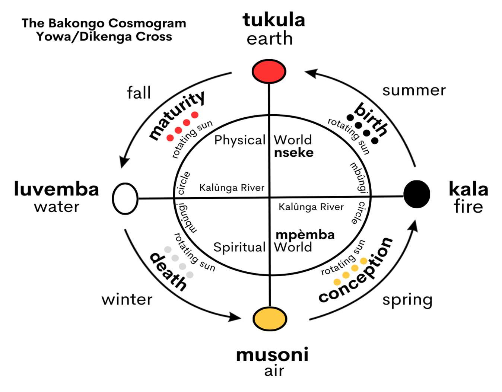
O diagrama clássico dos quatro elementos — Fogo, Ar, Terra e Água — com suas qualidades: quente, seco, frio e úmido. Cada par de elementos compartilha uma qualidade, permitindo a transmutação entre eles.
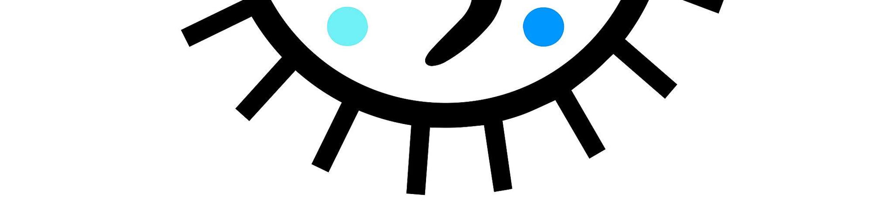
Iluminura medieval representando o cosmos geocêntrico: Deus, acima das esferas celestes, rege o mundo sublunar composto dos quatro elementos mutáveis, enquanto o éter (quintessência) preenche as esferas celestiais imutáveis.
Esses quatro elementos mutáveis comportavam a matéria que, unida à forma, compõe as coisas reais. A matéria contribui com as propriedades de quantidade, localização, posição e temporalidade.
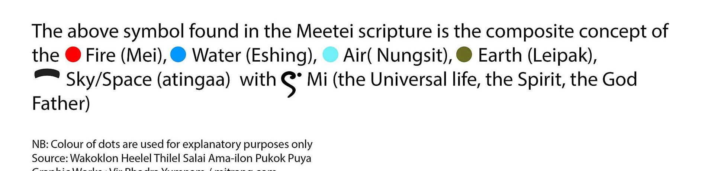
A representação do Universo por Leibniz, com a combinação dos quatro elementos de Aristóteles, da Dissertatio de Arte Combinatoria (1666). As qualidades contrárias se opõem no diagrama circular.
O mesmo esquema de cinco elementos básicos se encontra em culturas diversas pelo mundo.
No hinduísmo, o éter é descrito como "espaço" ou "vazio". No budismo, apenas os quatro primeiros elementos são considerados.
Nas religiões Bakongo de Angola, o éter é descrito como "o vazio circular que gerou o Universo", o que poderia ser interpretado como o espírito.
Os Meetei do norte da Índia põem o espírito ou Deus no lugar do éter. Os Bambara do Mali descrevem o éter como "pensamento".
Para Aristóteles, a matéria explicaria por que os indivíduos diferem entre si: a forma ou essência seria perfeita e única, mas a matéria traria imperfeição ao composto matéria-forma, e com isso variabilidade.
Levando em conta a ciência moderna, parece mais correto dizer que as essências admitem uma faixa de variação, e que a variabilidade dos indivíduos provém tanto da forma quanto da matéria.
Aristóteles distingue entre matéria-prima e matéria informada. Matéria-prima é pura potência, pura capacidade de vir a ser algo, sem ainda sê-lo.
As teorias da física moderna, segundo as quais tanto matéria quanto energia podem ser descritas como partículas, ondas ou vibrações de "cordas", se aproximam bastante dessa concepção aristotélica de matéria-prima.
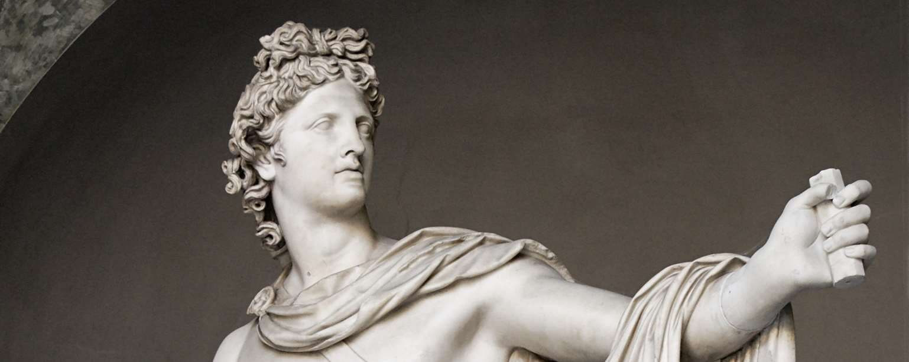
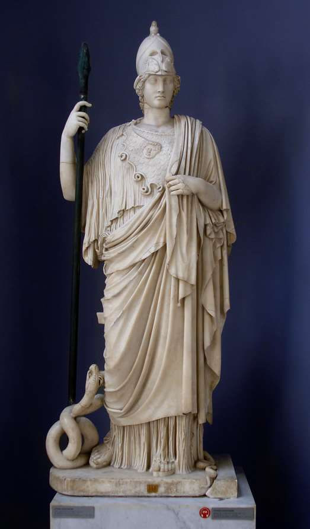
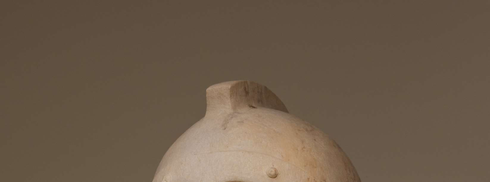
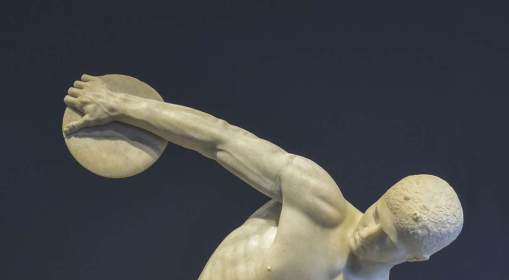
Os gregos do período clássico procuram representar as formas perfeitas na sua arte, ou seja, buscam as essências.
Apolo do Belvedere, cópia romana ca. 120-30 do original grego de Leocares, séc. IV a.C., Museu Pio-Clementino, Vaticano.
Atena Giustiniani, cópia romana do séc. II do original de Fídias do séc. V a.C. E a Cabeça da Atena de Pnyx, de Fídias ou um discípulo seu, séc. V a.C.
Lançador de discos de Míron, cópia romana de ca. 140 AD do original grego do séc. V a.C., Palazzo Massimo alle Terme, Museu Nacional Romano, Roma.
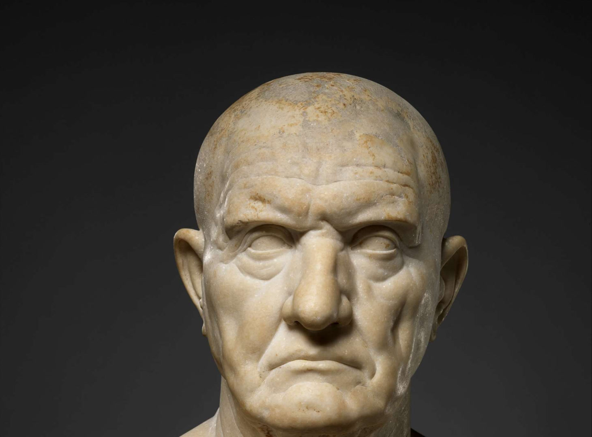
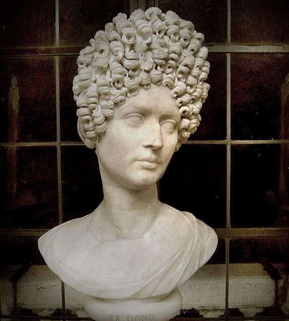
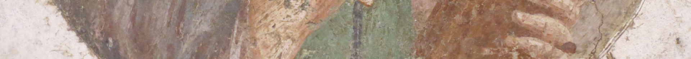
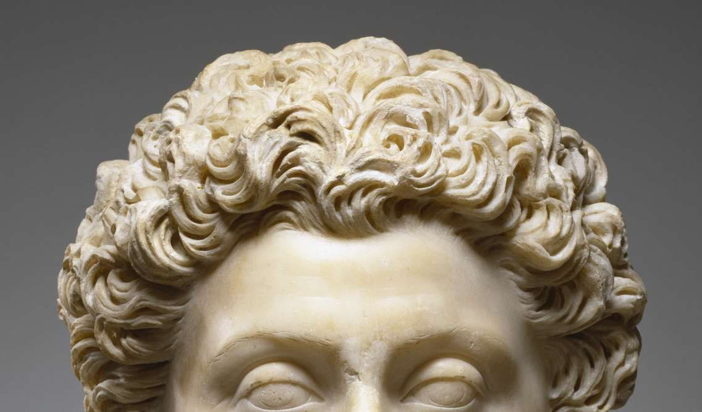
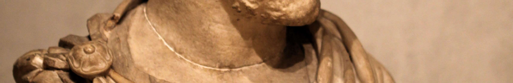
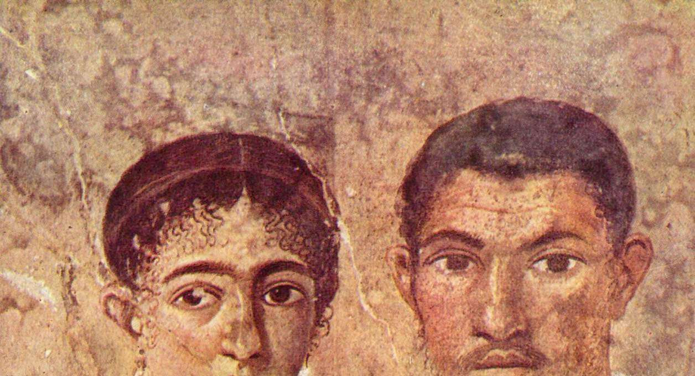
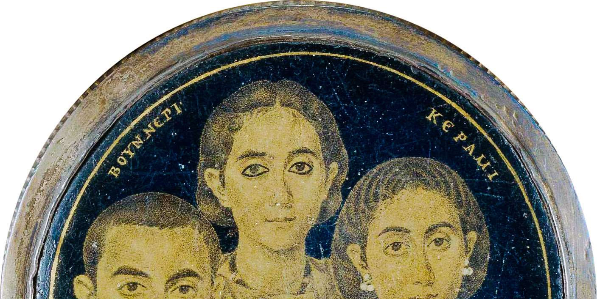
Já a arte romana procura a individualidade. Os retratos romanos capturam traços pessoais, rugas, expressões — a matéria que diferencia cada indivíduo.
O padeiro Terentius Neo e a esposa, ca. 20 AD, Pompeia. E o Medalhão da imperatriz Gala Placídia com os filhos, séc. III, Museu Santa Giulia, Brescia.
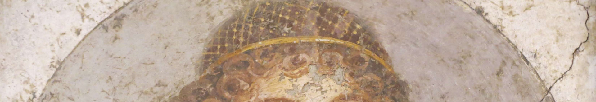
"Sappho", afresco de Pompeia, Museu Arqueológico Nacional, Nápoles. A arte romana retrata não o tipo ideal, mas a pessoa concreta — a matéria que individualiza cada ser humano.
A matéria informada corresponde à matéria organizada em átomos, moléculas, etc. A "forma" de um cristal de diamante não é primeiro a forma de carbono e depois a de diamante, mas apenas uma forma ou essência única.
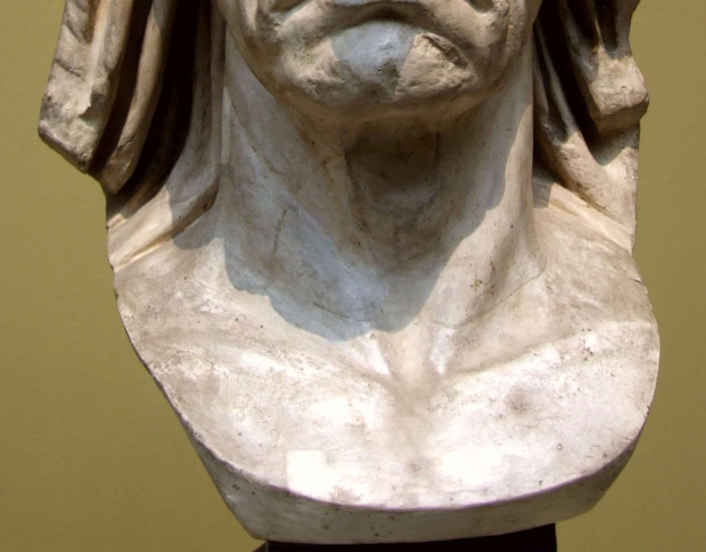
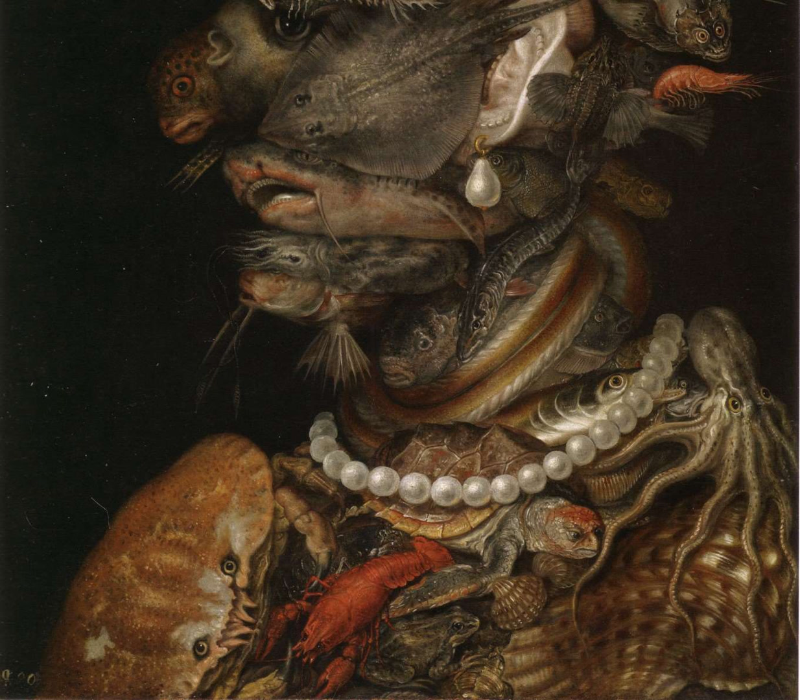
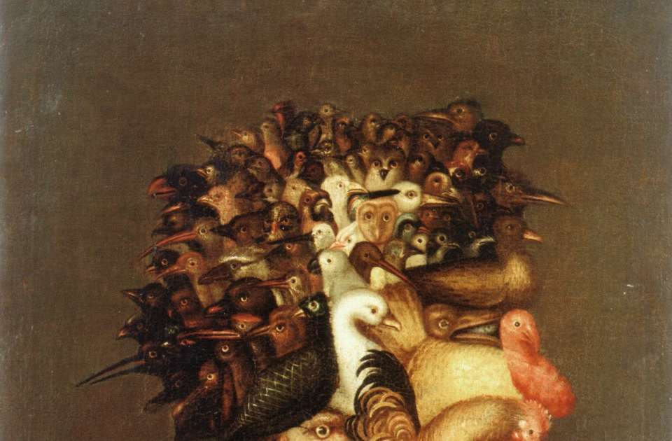
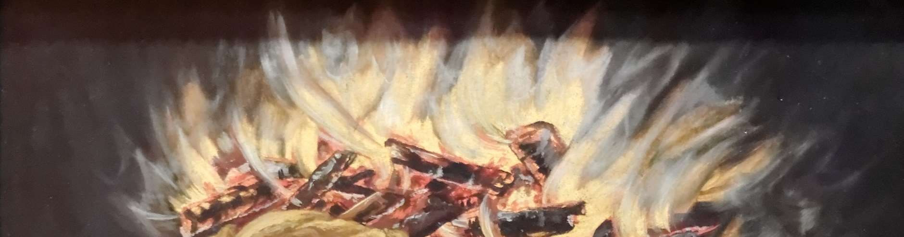
Acima, Os quatro elementos, de Giuseppe Arcimboldo, 1566. O pintor da corte dos Imperadores romano-germânicos compunha retratos com frutas e outros materiais.
Ao longo da história, houve diversos pensadores materialistas isolados. Mas o materialismo ocidental só "decolou" com David Hume (1711-1776), na Inglaterra.
Com os iluministas franceses do círculo de Diderot (1713-1784), e depois com Feuerbach e Marx nas ciências humanas, o materialismo contaminou correntes como a filosofia analítica atual.
O que todos esses pensadores têm em comum é a concepção de que tudo o que existe seria apenas matéria, sem forma; e pensam que a matéria-prima se auto-organizaria, o que é manifestamente contrário a toda a experiência humana.
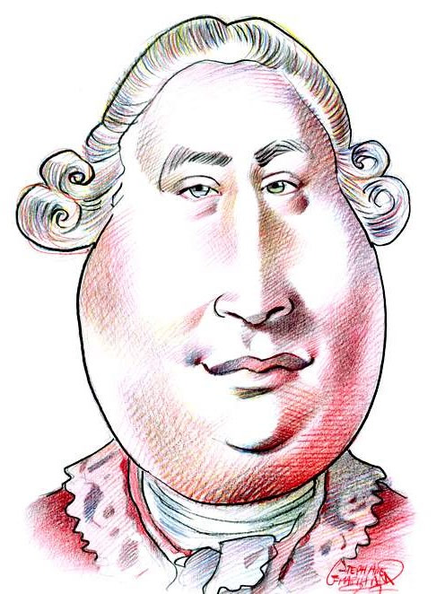
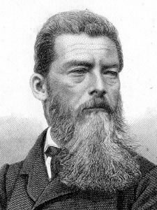
À esquerda, caricatura de David Hume, 2007, de Stéphane Lemarchand. À direita, Ludwig Feuerbach (1804-1872), que cunhou a famosa frase: "O homem é o que come".
Karl Marx, o Moisés da nova religião materialista. Caricatura francesa do séc. XIX. Marx tem na mão as duas obras centrais do comunismo, O Capital e o Manifesto comunista.
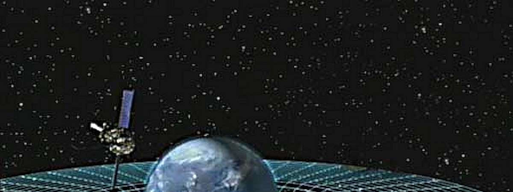
O continuum espaço-tempo que, segundo a Teoria da Relatividade, seria como que o "pano de fundo" de todo o Universo. A matéria curva o espaço-tempo ao seu redor.
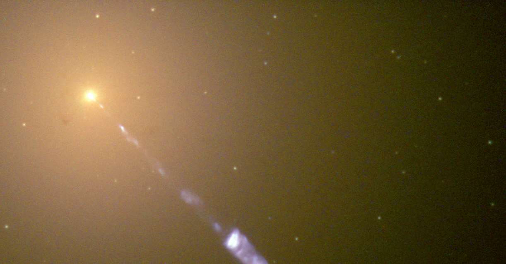
Jato relativístico de plasma emergindo do centro da galáxia M87 (NGC 4486), com a extensão de ca. 5000 anos-luz. Emitidos por buracos negros, esses jatos de matéria com velocidades próximas da luz ilustram a equivalência entre matéria e energia. Imagem composta do telescópio Hubble, NASA.
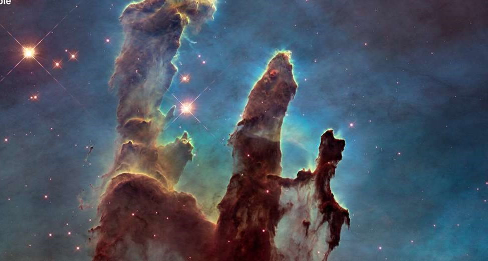
De que são feitas as coisas? A resposta exige compreender que toda realidade é um composto de matéria e forma — e que a matéria sozinha não basta para explicar a ordem do Universo.